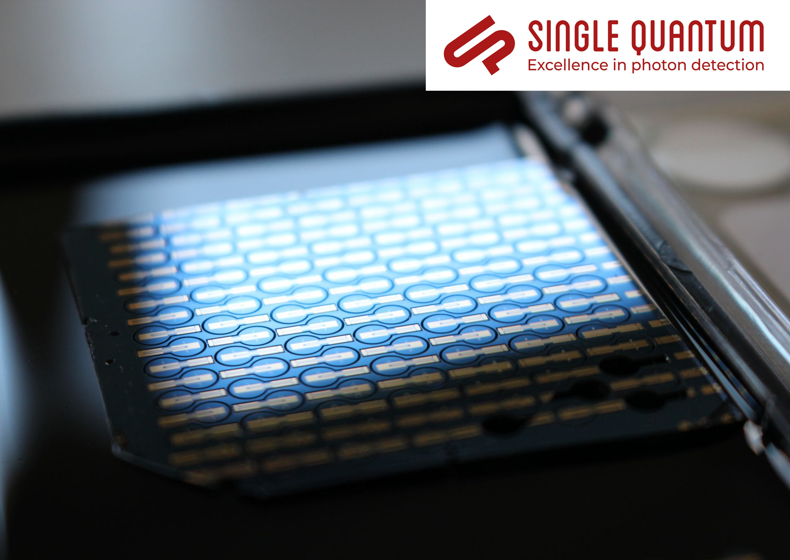
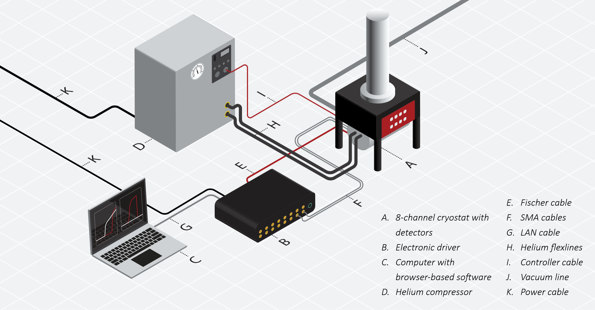
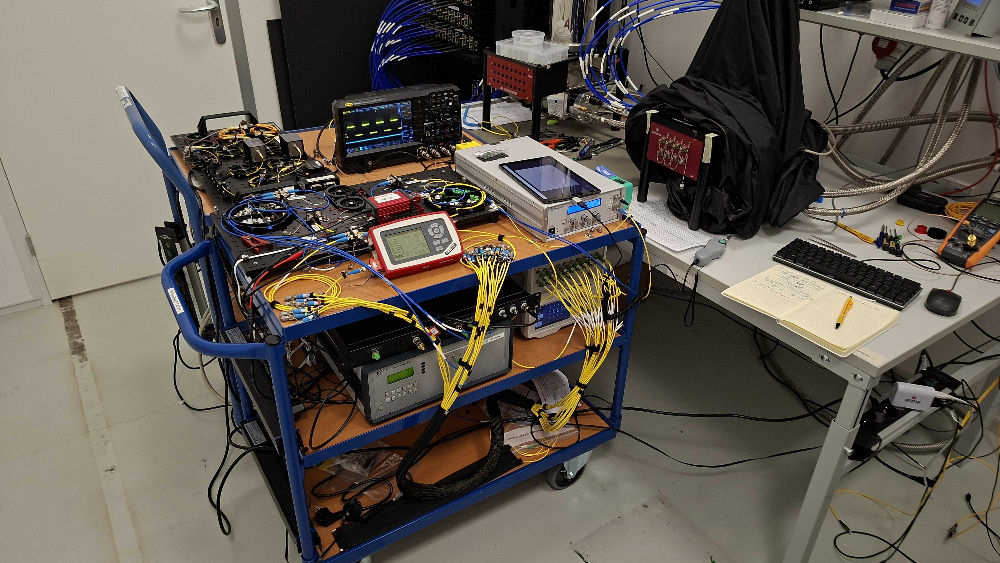
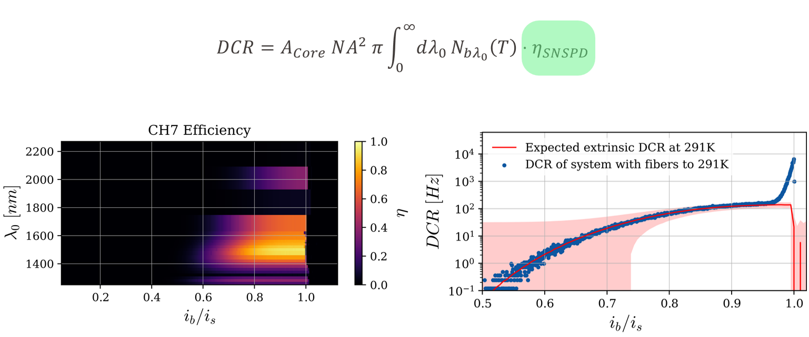

Single Quantum B.V.
Investigation of the thermal radiation background in SNSPD dark-count rates.
R&D internship investigating how thermal photons generate dark counts in superconducting nanowire single-photon detector (SNSPD) systems and how to reduce their impact at telecom wavelengths.




Context
Superconducting nanowire single-photon detectors are designed to register extremely weak optical signals, but unwanted photons can also produce counts when no signal is present. In the near infrared and at telecom wavelengths, thermal radiation is the dominant noise source contributing to the dark-counts of an SNSPD system.
What I investigated
At Single Quantum, I led a theoretical and experimental investigation of this thermal background with the goal of identifying key sources of thermal photons and quantitatively understanding their impact on the performance of SNSPD systems. I developed a physical model and simulation framework that combines blackbody photon generation, propagation through the optical system, and the wavelength-dependent detection efficiency to quantify the expected thermal contribution to the dark-count rate.
I then used automated characterization measurements to test the model against typical SNSPDs systems in various scenarios and configurations. This enabled comparing results to the developed model's simulations, identifying the parts of the system that dominate the thermal background, and evaluating mitigation strategies for improved performance.
Outcomes
- Identification of the main sources of thermal radiation in SingleQuantum's SNSPD systems and their impact on the dark-count rate.
- A simulation framework that accurately encapsulates the thermal photon generation and propagation through the SNSPD system in various operating conditions.
- Experimental validation of the model through efficiency and dark-count measurements of several SNSPD devices.
- Design strategies to reduce thermally induced dark counts in future low-dark-count products.
- Improved suitability of SNSPD systems for quantum key distribution and optical communications.